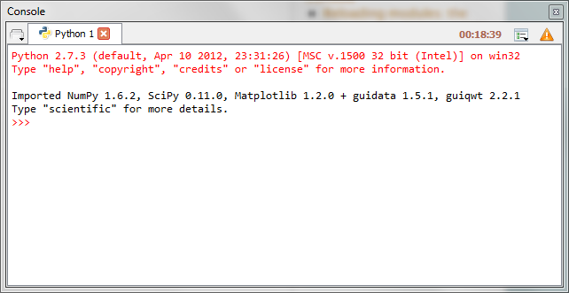

Console¶
The Console is where you may enter, interact with and visualize data, inside a command interpreter. All the commands entered in the console are executed in a separate process, thus allowing the user to interrupt any process at any time.
Many command windows may be created in the Console:
- Python interpreter
- Running Python script
- System command window (this terminal emulation window has quite limited features compared to a real terminal: it may be useful on Windows platforms where the system terminal is not much more powerful - on the contrary, on GNU/Linux, a real system terminal is opened, outside Spyder)
Python-based command windows support the following features:
- Code completion and calltips
- Variable explorer with GUI-based editors for arrays, lists, dictionaries, strings, etc.
- Debugging with standard Python debugger (pdb): at each breakpoint the corresponding script is opened in the Editor at the breakpoint line number
- User Module Deleter (see below)
Related plugins:
Reloading modules: the User Module Deleter (UMD)¶
When working with Python scripts interactively, one must keep in mind that Python import a module from its source code (on disk) only when parsing the first corresponding import statement. During this first import, the byte code is generated (.pyc file) if necessary and the imported module code object is cached in sys.modules. Then, when re-importing the same module, this cached code object will be directly used even if the source code file (.py[w] file) has changed meanwhile.
This behavior is sometimes unexpected when working with the Python interpreter in interactive mode, because one must either always restart the interpreter or remove manually the .pyc files to be sure that changes made in imported modules were taken into account.
The User Module Deleter (UMD) is a Spyder console’s exclusive feature that forces the Python interpreter to reload modules completely when executing a Python script.
For example, when UMD is turned on, one may test complex applications within the same Python interpreter without having to restart it every time (restart time may be relatively long when testing GUI-based applications).